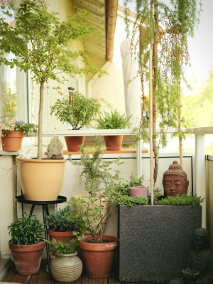
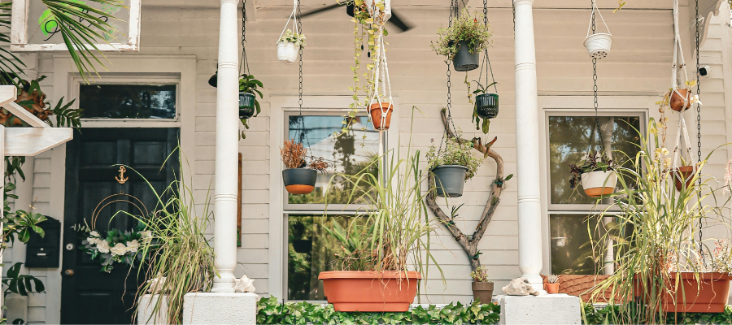
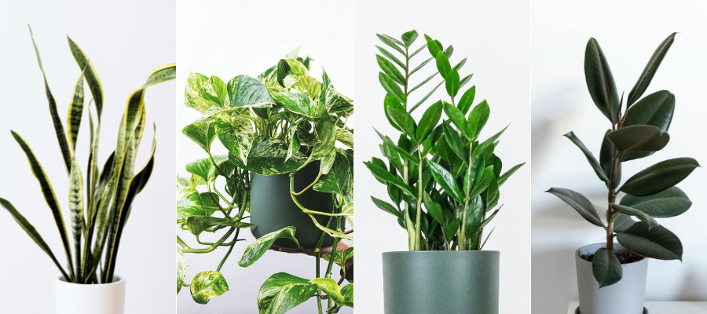
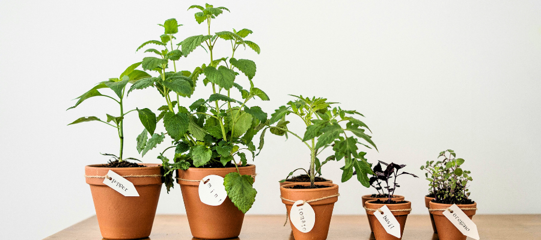

Plants That Can Handle a Windy Balcony
2 March 2026
A breezy balcony can feel amazing on a warm day — but for plants, constant wind is one of the fastest ways to cause stress. Leaves dry out, stems snap, soil loses moisture quickly, and even strong plants can struggle if they’re not suited for it.
The good news is that you can still build a lush balcony space. The trick is choosing plants that tolerate movement, sun shifts, and faster drying soil — especially if you plan to bring them back inside when fall arrives.
Why Wind Is Harder on Plants Than You Think
Wind doesn’t just move plants — it also speeds up moisture loss from both leaves and soil. As air moves across leaf surfaces, it increases transpiration, meaning plants lose water faster than they would in still indoor air. At the same time, wind pulls moisture from the top layer of soil, so pots dry out much more quickly than many plant owners expect.
Because of this, balcony plants often deal with:
- faster drying pots, sometimes needing water twice as often as indoors
- leaf edges browning from dehydration rather than sunburn
- lightweight soil shifting or loosening around the roots
- stems bending, leaning, or snapping under repeated gusts
Wind can also make plants work harder structurally. To stay upright, they redirect energy into strengthening stems and roots instead of producing new leaves. This is why some plants appear to “pause” growth for a short time after moving outdoors — they’re building stability first.

What Makes a Plant Wind-Tolerant
If you remember one thing when choosing balcony plants, let it be this: flexible plants handle wind far better than delicate ones.
Wind resistance isn’t really about strength — it’s about adaptability. Plants that can bend, reduce water loss, and anchor themselves firmly tend to cope best on exposed balconies.
When choosing plants, look for:
- smaller or thicker leaves
Compact leaves lose less water and catch less wind, reducing stress on the plant. - flexible stems rather than brittle ones
Plants that sway instead of resisting gusts are less likely to snap or suffer structural damage. - a slightly woody structure
Semi-woody stems provide stability while still allowing some movement, which helps plants balance strength with flexibility. - dense or well-anchored root systems
Strong roots help plants stay secure in pots and absorb water efficiently when wind dries the soil quickly.
Plants that naturally grow in open meadows, hillsides, or coastal environments are already adapted to moving air, fluctuating moisture, and stronger sunlight. Because of this, they often transition to balcony life surprisingly well.
When you match a plant’s natural habitat to your balcony conditions, you’re not forcing it to adapt — you’re simply giving it a space that feels familiar.

Houseplants That Can Handle a Breezy Balcony (and Return Indoors)
Some houseplants genuinely enjoy a summer outdoors — even on a slightly windy balcony or exposed city patio — as long as they’re positioned with care. The key is choosing plants with sturdy leaves, flexible growth, and good drought tolerance.
Good candidates include:
- Snake plant – Its upright, fibrous leaves are built to hold water and resist movement, making it well suited to sun, heat, and occasional drying winds.
- ZZ plant – This plant stores water in thick rhizomes beneath the soil, which helps it cope with fluctuating moisture and warm airflow outdoors.
- Rubber plant – Its large, leathery leaves lose water more slowly than thin foliage, so it tolerates breezy conditions better than softer tropical plants.
- Pothos – Flexible vines bend rather than snap in wind, and the plant adapts quickly to changing light and humidity levels.
For more options, explore our extended guide to houseplants that love a summer on the balcony, or read our step-by-step guide on how to prepare houseplants for outdoor summer. These plants also tend to transition back indoors smoothly in autumn, especially if you bring them inside before nights drop below about 12 °C (54 °F) and reintroduce them gradually to indoor light.
Tip: Even wind-tolerant plants benefit from a bit of shelter. Position them near a wall, in a corner, or slightly behind sturdier plants instead of directly on the railing. This reduces stress while still letting them enjoy fresh air and brighter light.

Balcony Herbs That Love Air Movement
If your balcony gets steady airflow, herbs can actually become some of your happiest and easiest plants. Many culinary herbs evolved in exposed, sun-baked regions where wind, dry soil, and strong light are the norm — so a breezy balcony often recreates their natural habitat surprisingly well.
Great wind-friendly herbs include:
- Rosemary – Native to Mediterranean hillsides, rosemary prefers dry air and excellent drainage. Wind helps keep its needle-like leaves dry, reducing the risk of rot.
- Thyme – A low-growing herb that naturally spreads across rocky ground. Its small leaves lose little moisture, making it very tolerant of sun and moving air.
- Sage – Slightly fuzzy leaves actually help slow water loss and protect against strong light, which is why sage handles exposed balconies better than many soft-leaf herbs.
- Oregano – Adapted to open, sunny slopes, oregano thrives in conditions that might stress more delicate plants. Wind encourages compact, flavorful growth.
- Chives – Their narrow, flexible leaves bend rather than snap in breezes, and airflow helps prevent the fungal issues they sometimes develop indoors.
Because these herbs evolved in dry, open environments, wind can actually benefit them. Air circulation reduces excess humidity around leaves, which lowers the chances of mildew, mold, and bacterial leaf spots — common problems for herbs grown in still indoor air.
And since herb balconies are usually seasonal anyway, you don’t need to stress about bringing everything inside. You can simply enjoy fresh harvests all summer, then trim or collect what’s left before the first frost.
Plants That Add Movement Without Breaking
Wind doesn’t have to feel like a problem on a balcony — it can actually become part of the atmosphere. Gentle movement brings life to a small outdoor space, softens hard railings and walls, and makes the whole corner feel more natural and calming. The key is choosing plants that are built to sway rather than resist.
Look for species with flexible stems, narrow leaves, or low, spreading growth. These traits help plants bend with airflow instead of snapping or drying out. In nature, many of these plants grow in open fields, hillsides, or coastal areas where wind is constant, so they’re already adapted to motion and exposure.
Good options include:
- Ornamental grasses in pots – their thin blades are designed to move, not tear, and the gentle rustling sound can make a balcony feel peaceful rather than exposed.
- Trailing ivy – flexible vines shift easily with airflow and rarely suffer structural damage, even on breezier balconies.
- Creeping thyme – low, woody stems hug the soil, which protects them from wind stress while still releasing fragrance when warmed by sun.
- Compact lavender varieties – their slightly woody stems and narrow leaves reduce water loss, and movement actually helps keep foliage dry and healthy.
Plants like these don’t just tolerate wind — they use it. Their movement softens the space visually, creates a slow, relaxed rhythm, and helps your balcony feel like a small outdoor retreat rather than a windy ledge.
Helping Your Balcony Plants Cope with Wind
Even plants that naturally tolerate breezes benefit from a bit of thoughtful setup. On balconies, wind tends to swirl, bounce off walls, and accelerate around corners, which can dry soil faster than sun alone. A few small adjustments can protect your plants from stress and help them stay hydrated and stable throughout the season.
Try these simple strategies:
- Place taller plants against a wall, not the railing
Walls create a natural windbreak and reduce the strongest gusts. This helps prevent stems from bending repeatedly, which can weaken plant structure over time. - Cluster pots together
Groups of plants form their own microclimate. They slow airflow, hold humidity between leaves, and shade each other’s soil, which reduces evaporation and watering frequency. - Use heavier containers
Terracotta, ceramic, or weighted planters lower the center of gravity and prevent tipping. Stable roots mean less disturbance, which keeps plants from going into stress mode after every windy day. - Water slightly more often during hot, windy weeks
Wind increases transpiration — the process where plants release moisture through their leaves. When this happens faster than roots can replace the water, leaf edges brown and growth slows. A small watering adjustment keeps plants balanced. - Rotate plants occasionally
Constant wind from one direction can dry out one side of a plant faster or cause uneven growth. Rotating them every week or two helps maintain symmetry and prevents one-sided stress.
Often, these environmental tweaks matter just as much as the plant choice itself. A well-placed, sheltered setup can turn even a moderately sensitive plant into a thriving balcony resident.
Final Thought
A windy balcony doesn’t mean you need to give up on plants — it just means choosing the right ones and giving them a thoughtful setup. With the right placement, a bit of shelter, and plants suited to movement, even breezy spaces can become green, welcoming corners.
Once you find that balance, the breeze can actually make your balcony feel more alive. Leaves move softly, scents travel through the air, and plants often grow sturdier than they would indoors. Instead of fighting the conditions, you’re working with them — and that’s usually when plant care starts to feel simpler, calmer, and more enjoyable.